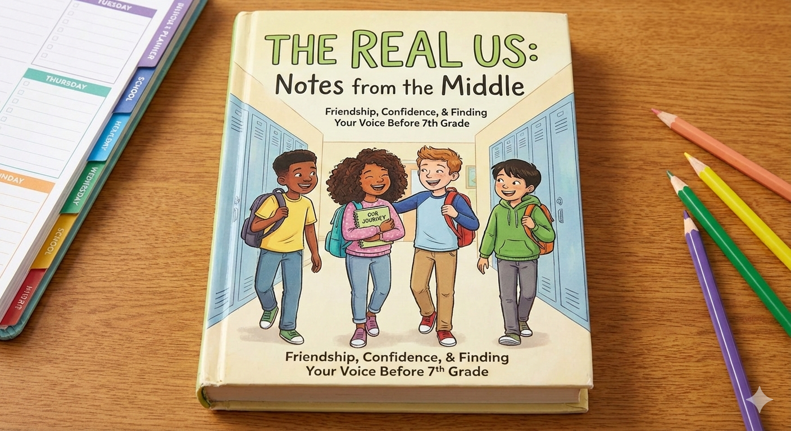

Bedah Buku: Negeri 5 Menara
Ditulis oleh: Ahmad Fuadi

Buku ini menceritakan perjalanan hidup Alif, seorang anak Minang yang menempuh pendidikan di pondok pesantren Madani.
Awalnya penuh keraguan, namun perlahan Alif menemukan makna perjuangan, persahabatan, dan kekuatan impian.
“Man Jadda Wajada – Siapa yang bersungguh-sungguh, dia akan berhasil.”
Kalimat itu menjadi semangat utama dalam buku ini. Kisah yang ditulis berdasarkan pengalaman nyata ini sangat menginspirasi,
terutama bagi pelajar yang sedang mengejar mimpi mereka. Penulis berhasil menyampaikan pesan-pesan moral melalui narasi yang hidup.
Buku ini cocok dibaca oleh remaja dan orang dewasa yang sedang mencari motivasi hidup. Cerita persahabatan, perjuangan, dan cinta belajar
membuatnya menyentuh dan relevan bagi pembaca di berbagai usia.
Bedah Buku:The body keeps the score
Ditulis oleh: Dr. Bessel van der Kolk.

Buku The Body Keeps the Score karya Dr. Bessel van der Kolk membahas bagaimana trauma psikologis memengaruhi otak, pikiran, dan tubuh manusia, berdasarkan penelitian ilmiah dan pengalaman klinis. Berikut ringkasan isinya dengan bahasa yang aman dan mudah dipahami
"hubungan tubuh dan pikiran, yang menekankan bahwa tubuh dapat “mengingat” pengalaman emosional. Oleh karena itu, dampak psikologis tidak hanya terlihat dalam pikiran, tetapi juga dalam respons fisik dan perilaku sehari-hari.""
Buku The Body Keeps the Score menjelaskan secara mendalam tentang hubungan antara tubuh dan pikiran, dengan penekanan bahwa pengalaman emosional tidak hanya diproses oleh pikiran secara sadar, tetapi juga disimpan dan direspons oleh tubuh. Penulis menunjukkan bahwa tubuh memiliki sistem biologis—seperti sistem saraf dan respons stres—yang secara otomatis merekam pengalaman emosional, terutama pengalaman yang sangat menekan atau mengguncang perasaan seseorang.
Dalam buku ini dijelaskan bahwa ketika seseorang mengalami peristiwa emosional yang kuat, otak dan tubuh bekerja bersama untuk bertahan. Jika pengalaman tersebut terlalu berat untuk diproses secara normal, maka ingatan emosionalnya tidak selalu tersimpan sebagai cerita yang jelas di pikiran, melainkan muncul dalam bentuk reaksi tubuh, seperti ketegangan, kegelisahan, atau perubahan perilaku. Inilah yang dimaksud bahwa tubuh “mengingat” pengalaman emosional, meskipun pikiran tidak selalu menyadarinya.
Akibatnya, dampak psikologis tidak hanya terlihat dalam cara seseorang berpikir atau mengingat, tetapi juga tampak dalam respons fisik dan perilaku sehari-hari. Misalnya, seseorang dapat merasa tidak nyaman, mudah cemas, atau sulit merasa aman tanpa mengetahui penyebab yang jelas. Buku ini menekankan bahwa reaksi-reaksi tersebut bukan kelemahan, melainkan respons alami tubuh yang mencoba melindungi diri berdasarkan pengalaman masa lalu.
Melalui pendekatan ilmiah, buku ini memperlihatkan bahwa untuk memahami kesehatan mental secara utuh, seseorang tidak bisa hanya fokus pada pikiran atau emosi saja. Tubuh juga perlu diperhatikan, karena ia berperan besar dalam menyimpan dan mengekspresikan pengalaman emosional. Oleh karena itu, pemulihan dan kesejahteraan psikologis perlu melibatkan kesadaran akan hubungan antara tubuh, pikiran, dan emosi secara menyeluruh.
Buku ini tidak secara khusus ditujukan untuk anak-anak atau remaja, karena bahasanya cukup kompleks dan membahas konsep psikologi yang mendalam. Jika dibaca oleh remaja, sebaiknya dengan pendampingan guru atau orang dewasa.
Bedah Buku: Anak hebat
Ditulis oleh: Ristyanti Nugraheni

Buku Anak Hebat karya Ristyanti Nugraheni adalah buku anak usia dini yang berisi kegiatan dan latihan kreatif untuk anak agar mereka bisa belajar sambil bermain dan menjadi lebih pintar serta hebat.Selain itu, buku ini menggunakan bahasa yang ramah dan langsung mengajak anak untuk berpartisipasi dalam kegiatan belajar aktif sehingga proses belajar menjadi lebih membentuk rasa percaya diri dan keterampilan dasar pada anak kecil.
" Bermain sambil belajar."
Buku Anak Hebat ditulis untuk membantu anak belajar sambil bermain, mengembangkan kreativitas, serta melatih kemampuan dasar seperti motorik, berpikir, dan rasa percaya diri sejak usia dini.
Buku ini cocok dibaca oleh Anak usia PAUD hingga TK (sekitar 3–6 tahun)
Bedah Buku: iqro'
Ditulis oleh:KH. As’ad Humam, bersama Tim Tadarus AMM

Buku Iqro’ berisi materi untuk mengajarkan cara membaca huruf Arab dari dasar sampai lebih kompleks. Secara garis besar
" Membaca al-quran sangatlah enting akan tetapi banyak masyarakat yang tidak bisa membaca al-quran."
Yang mendukung penulis menulis buku Iqro’ adalah kebutuhan masyarakat akan metode belajar membaca Al-Qur’an yang mudah, cepat, dan sistematis, terutama untuk anak-anak dan pemula.
Buku ini cocok dibaca oleh orang yang baru belajar membaca al-quran.
Bedah Buku: Cerita anak hebat
Ditulis oleh: Tim Penulis Buku Anak Jatim

Tujuan penulis menulis buku Cerita Anak Hebat adalah untuk memberikan bacaan yang mendidik dan membangun karakter anak melalui cerita-cerita yang menarik dan mudah dipahami.
" mengenal siapa itu anak hebat."
Buku cerita anak hebat ditulis untuk membantu anak belajar sambil bermain, mengembangkan kreativitas, serta melatih kemampuan dasar seperti motorik, berpikir, dan rasa percaya diri sejak usia dini.
Buku ini cocok dibaca oleh Anak usia PAUD hingga TK (sekitar 3–6 tahun)
Bedah Buku: Aku belajar ke toliet sendiri
Ditulis oleh: Grace Sameve, Gianti Amanda, Mesty Ariotedjo, dan Reda Gaudiamo

Tujuan penulis menulis buku Cerita Anak Hebat adalah untuk memberikan bacaan yang mendidik dan membangun karakter anak melalui cerita-cerita yang menarik dan mudah dipahami.
" Mengajarkan sikap mandiri bagi anak."
Tujuan penulis menulis buku Aku Belajar ke Toilet Sendiri adalah untuk membantu anak belajar mandiri menggunakan toilet dengan cara yang mudah, aman, dan menyenangkan.
Buku ini cocok dibaca oleh Anak usia PAUD hingga TK (sekitar 1-3 tahun)
Bedah Buku: Aku dan tubuhku
Ditulis oleh: Fitri Fauziah

Tujuan penulis menulis buku Cerita Anak Hebat adalah untuk memberikan bacaan yang mendidik dan membangun karakter anak melalui cerita-cerita yang menarik dan mudah dipahami.
" Mengenalkan bagian tubuh kepada anak."
Tujuan penulis menulis buku Tujuan buku Aku dan Tubuhku ditulis adalah untuk mengenalkan anak pada bagian-bagian tubuh dan fungsinya secara sederhana dan positif.
Buku ini cocok dibaca oleh Anak usia PAUD hingga TK
Bedah Buku: Panduan hidup anak keren
Ditulis oleh: Hwang Sang Gyu

Tujuan penulis menulis buku panduan hidup anak keren adalah untuk memberikan bacaan yang mendidik dan membangun karakter anak melalui cerita-cerita yang menarik dan mudah dipahami.
" Memberi panduan hidup bagi anak."
Tujuan penulisan buku Panduan Hidup Anak Keren adalah untuk membantu anak memahami kehidupan dan nilai-nilai penting dengan cara yang menyenangkan dan mudah dipahami.
Buku ini cocok dibaca oleh Anak usia PAUD hingga TK
Bedah Buku: Curiosity ingin tahu
Ditulis oleh: ditulis oleh beberapa orang yang bekerja sama sebagai tim penulis dan ahli anak.

Buku Curiosity (Ingin Tahu) isinya membahas pentingnya rasa ingin tahu pada anak, khususnya bagaimana anak dapat bertanya, mengeksplorasi, dan memahami dunia di sekitarnya dengan cara yang menyenangkan dan sesuai usianya.
"Rasa ingin tahu."
Tujuan penulis menulis buku Curiosity (Ingin Tahu) adalah untuk menumbuhkan rasa ingin tahu anak sejak usia dini sebagai dasar belajar dan perkembangan berpikir.
Buku ini cocok dibaca oleh Anak usia PAUD hingga TK
Bedah Buku: the real us:notes from the middle
Ditulis oleh: Tommy Greenwald

The real us:notes from the middle adalah novel fiksi kontemporer untuk pembaca usia middle grade (sekitar sekolah menengah pertama). Buku ini mengisahkan kehidupan dan pengalaman anak-anak di sekolah menengah yang mencoba mencari jati diri mereka sendiri dalam lingkungan sosial yang penuh tekanan dan perubahan.
"Real atau nyata."
Tujuan penulis menulis buku ini adalah mengajarakan terntang realitas remaja,menghargai perbedaan,dan eksplorasi hubungan.
Buku ini cocok dibaca oleh remaja umur 13 sampai 18 tahun.
← Kembali ke Katalog